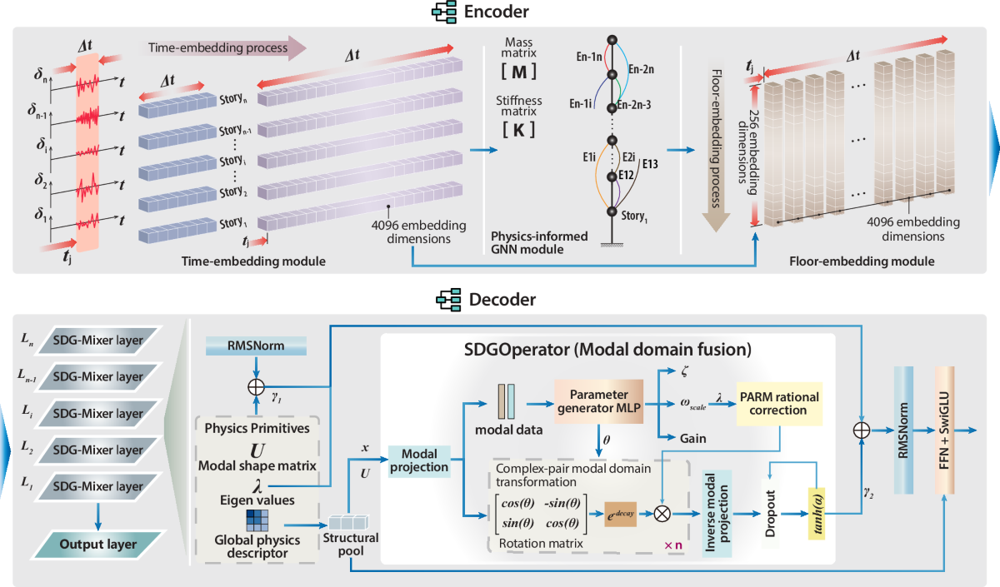
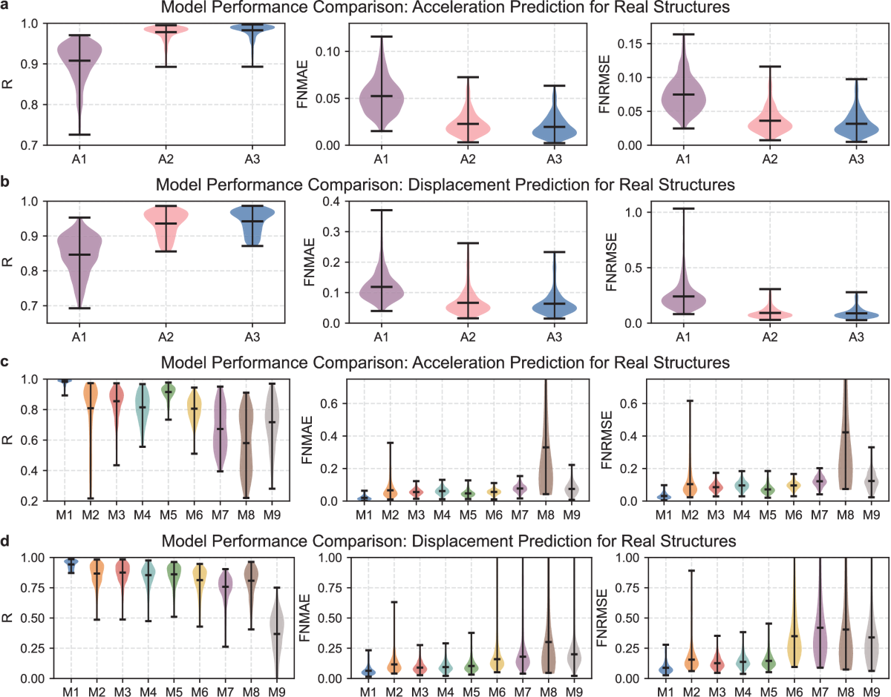
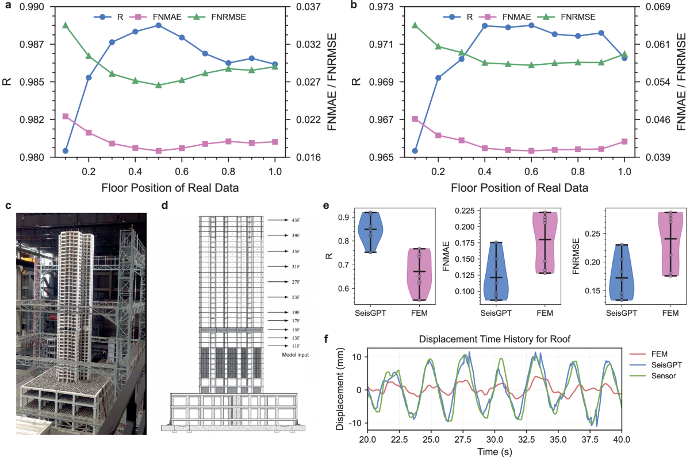

论文笔记：SeisGPT——把建筑振动规律写进响应预测模型
1. 背景与核心判断
论文：A physics-informed foundation model for rapid high-fidelity structural response prediction，同济大学土木工程防灾减灾全国重点实验室，发表于 Nature Communications 17, 8884（2026-07-11）。正式全文
SeisGPT 学习的是：给定建筑结构信息和外部激励，快速计算各楼层的非线性位移或加速度时程。它先计算一个便宜的线性力学响应，再让网络结合质量、刚度和结构相关的谱传播，逼近昂贵的非线性有限元（FE）分析。稀疏传感器版本 SeisGPT-R 则进一步用实测响应校正预测。
我认为最值得借鉴的是“可计算的力学先验＋跨建筑预训练＋观测校正”这套分工。 合成预训练向真实建筑有限元模型迁移的证据较强；“普适结构基础模型”“实测精度全面超过有限元”则超出了当前证据。还有一个复现前必须解决的问题：本次下载的公开代码与正式论文的核心解码器描述不一致，具体见第 6 节。
阅读范围：期刊正文、全部主表、关键原图，补充材料中的架构、训练、消融、IDA 与振动台实验细节，以及作者公开代码的静态检查；未运行模型、加载权重或复现实验。下文的性能均为作者报告。
2. 从一个真实案例看问题：只有一层传感器，怎样知道整栋楼在怎么动？
论文 Fig. 6 使用了一座 43 层建筑的 1∶10 缩尺振动台模型。输入地震后，研究者希望知道各楼层的位移；实际重构时只给 SeisGPT-R 第 11 层的位移测量和台面激励，其余已布置传感器的位置用于评估。
常规有限元方法先建立结构和材料模型，再逐时刻求解动力平衡与非线性本构。作者报告，这个复杂试件的每条地震分析需要约一至两天；而且 Fig. 6f 中，有限元模型（FEM）计算的屋顶位移与测量有明显幅值偏差。计算精细不代表模型参数完全对应真实试件。
纯序列网络也有另一道难题：同一条地震波作用于不同建筑，结果取决于楼层质量、刚度分布和结构耦合。仅从地震波学习一个固定映射，难以同时处理框架、框架—剪力墙和剪力墙建筑。
所以本文实际回答了两个相连的问题：如何让一个预训练模型随建筑结构改变响应规律；如何再用少量观测修正结构模型与真实对象之间的偏差。 后者是传感器辅助重构任务，评估时要与无传感器的响应计算区分。
3. 方法：结合力学先验和观测，在结构相关的谱空间传播
3.1 沿着振动台案例走完数据流
对上面的试件，处理流程是：
- 从有限元模型提取楼层质量和刚度。 楼层质量集总为 $M$；对各楼层依次施加单位水平力，收集位移，再通过满足对称性约束的最小二乘拟合 $KU=F$，得到有效刚度矩阵 $K$。因此，输入准备仍需要结构建模，不能只凭楼层数使用模型。
- SDR 计算线性粗响应。 Simplified Dynamic Response 模块用简化多自由度系统、Rayleigh 阻尼和 Newmark 积分，快速产生各楼层的响应先验。这个数值模块没有负责求解目标中的完整弹塑性行为。
- 图网络编码楼层差异。 激励与 SDR 时序先嵌入特征空间；每层楼作为一个节点，质量—刚度耦合决定连边和边属性，GATv2 消息传递让各楼层特征感知结构关系。
- SeisGPT-R 在编码后融合第 11 层观测。 传感器数据走独立嵌入路径，与结构特征进行可学习门控融合。未观测楼层的高保真响应只作为监督目标，不进入观测输入；基础预测模型没有这条传感器路径。
- Spectral Duhamel–Green（SDG）Mixer 传播并修正响应特征。 楼层特征映射到固定数量的潜在 token，在由该建筑结构决定的谱基中进行阻尼传播和可学习修正，再映射回各楼层的输出时程。对这个重构案例，解码器使用的是已融合观测的特征。（Methods；Supplementary §§3–5）

来源：原文 Fig. 8。重点看下半部分：质量和刚度参与生成谱基，潜在状态随后经历旋转、衰减和幅度修正。这是力学信息进入计算过程的位置。
3.2 核心创新：让 token 混合遵循结构相关的振动形式
普通 attention 根据 token 间的相似度混合信息。本文改为先构造一个随建筑变化的谱坐标系。用简化记号概括原文 Eqs. 19–23：
$D$ 把刚度按质量归一化；$\widetilde D$ 进一步调整尺度；可学习的 $L$ 将有效楼层映射到固定 token 空间，补齐的空楼层不参与物理算子构造。对 $B$ 做特征分解，得到该建筑对应的潜空间谱基 $U$ 和特征值 $\lambda_i$。这里省略了补充材料中的额外数值缩放与裁剪步骤。
直觉是：一栋楼怎样振动，首先受质量和刚度组织方式约束。网络用这种结构组织全局信息交换，就不必完全从数据中重学楼层之间的关系。但经归一化和可学习映射得到的是潜空间中的频率类坐标，不能直接当作建筑的真实固有频率或振型。
投影到谱空间后，第 $i$ 个谱分量、第 $h$ 个谱头中的成对潜在通道 $\hat z_{i,h}$ 按下式更新（Eq. 24）：
旋转角 $\theta$ 对应相位推进，指数项对应衰减，$A$ 调节幅值。参数由结构描述与谱坐标共同决定。为容纳偏离线性振动的行为，幅度还加入以 $\lambda_i$ 为自变量的有理函数修正：分子用 tanh 约束，分母采用正移位并加入数值正则项（Eq. 25）。特征再经过残差门控和 SwiGLU 前馈网络。
物理在这里提供传播形式，非线性行为仍靠高保真响应监督学习。 它没有逐步执行完整弹塑性本构积分；带阻尼的局部更新也不能直接证明整个网络满足动力平衡或全局稳定性。Supplementary §3.2 同样将其定位为受动力学启发的谱混合层。
3.3 时间窗口和训练方式决定“预测”的含义
每个输入窗口包含 1020 个时间点的激励和 SDR 响应：1000 点历史上下文，加上 20 点目标时段；采样间隔为 0.02 s，输出末尾 20 点的高保真响应，即约 0.4 s 的响应片段。不同窗口独立处理，可以并行，也避免把先前预测不断喂回造成误差累积。（Results；Supplementary §4.1.1）
目标时段的外部激励已经提供给模型。 这符合“给定地震波计算响应”的仿真任务，没有使用目标高保真响应，但不能据此声称能够提前预测未知地震的未来响应。
按 Supplementary §3.3.4 的实验配置，模型使用 256 个 latent token、4096 维特征、2 个 SDG-Mixer block、32 个谱头，以及 4 层、每层 16 头的图编码器；Table S7 报告总参数量为 570.49M。加速度与位移分别训练模型。优化器为 AdamW，学习率 $10^{-5}$，warm-up 4000 步后 cosine decay；普通运算用 bf16，谱分解等敏感运算用 fp32。真实建筑有限元数据微调训练 10 个 epoch。（Supplementary §§3.3.4、3.4、4.1、4.2）
建筑专属 LoRA 是随后单独做的适配实验：冻结原权重，只训练低秩增量；使用该楼 1–9 条响应记录，另留一条测试。一次单记录适配使位移相关系数由 0.942 提高到 0.962；作者报告单块 A800 上每栋楼约需 20 s，适配编码器的效果最好（Fig. 4）。这与得到 SeisGPT-Enhanced 的全局微调是两个阶段。
4. 数据：覆盖大量建筑，但主体仍是仿真标签
数据生产流程先用 ArchiFlux、StructFlux、BeamFlux 生成建筑平面和结构布置，再调整构件尺寸、配筋，检查层间位移与强度，最后交给 OpenSees 进行非线性时程分析。生成模型负责扩大设计样本，结构校核负责筛选，有限元求解器负责产生响应标签。（Methods；Fig. 1b）
Table 3 列出 150,000 个框架、60,000 个框架—剪力墙、60,000 个剪力墙模型，以及按 694 座真实建筑建立的有限元模型，共 2,053,880 个分析案例。主数据中合成建筑为 1–30 层，真实建筑为 2–30 层。测试按建筑划分：三类合成建筑各留出 1000 座；真实建筑为 629 座训练、65 座测试。
这里必须保留两个口径：
- “真实建筑数据”指真实建筑的有限元响应。 Fig. 3 的迁移实验并不是在 65 栋楼的现场地震测量上测试；振动台才提供独立的物理测量证据。
- 数据规模有一处未解释的统计差异
[?]。 Methods 写每栋建筑随机选三条地震、分别沿两个方向分析，但 $270{,}694\times3\times2=1{,}624{,}164$，不能直接得到 Table 3 的案例总数。笔记保留表中统计，不自行补造额外工况。
5. 实验：哪些证据真正支持方法？
5.1 大规模合成预训练确实帮助迁移
最有解释力的实验是同一架构在真实建筑有限元测试集上的三个训练配置。指标 FNMAE（逐层归一化平均绝对误差）先用每层真实响应的全时程绝对峰值归一化，再平均误差；它衡量平均波形误差，不是峰值响应误差或每个瞬时点的相对误差。FNRMSE 则在相同归一化下计算各楼层的均方根误差并平均。（Eqs. 1–5；Fig. 3a–b）
| 配置 | 加速度 FNMAE ↓ | 位移 FNMAE ↓ | 加速度 / 位移 Pearson $R$ ↑ |
|---|---|---|---|
| A1：仅用真实建筑 FE 数据从头训练 | 0.0524 | 0.1189 | 0.9079 / 0.8406 |
| A2：合成数据预训练后直接测试 | 0.0227 | 0.0666 | 0.9781 / 0.9359 |
| A3：A2 再做真实建筑 FE 微调 | 0.0195 | 0.0639 | 0.9829 / 0.9423 |
最大一步改善来自预训练，后续微调的增益较小。这支持“从大量合成建筑学到了可迁移的响应规律”，而非模型仅记住了少量真实建筑。与其他模型比较时，TimesNet 的加速度、位移 FNMAE 分别为 0.0470、0.1036，均高于 A3（Fig. 3c–d）。

来源：原文 Fig. 3。上方 A1→A2→A3 比下方密集的模型排名更值得看：预训练带来主要收益，同时样本误差仍有长尾。
摘要“归一化误差低于 5%”需要按场景理解：这里最终位移 FNMAE 为 6.39%，合成剪力墙测试中的位移 FNMAE 也为 6.33%（Fig. 2；Table S2）。平均精度不能写成统一的误差保证。
5.2 SDG 的优势是精度与计算成本的组合，但消融口径仍有疑点
Table S7 比较了保留同一总体流程、替换解码器的两种方案：
| 指标 | Transformer 解码器 | SDG-Mixer 解码器 |
|---|---|---|
| 真实建筑 FE 位移 FNMAE ↓ | 0.0745 | 0.0639 |
| 真实建筑 FE 位移 FNRMSE ↓ | 0.1213 | 0.0882 |
| 总参数量 / 解码器参数量（M） | 1764.08 / 1214.30 | 570.49 / 304.93 |
| 每次推理 GFLOPs ↓ | 761.07 | 185.12 |
| 吞吐量（sample/s）↑ | 54.47 | 127.41 |
作者报告 SDG 在更少参数下得到更低误差和约 2.34 倍吞吐量。这个结果支持其作为高效解码骨干的价值，但不是等参数、等计算预算的对照，也没有分别隔离谱基、阻尼旋转和有理修正各自的贡献。
还有一个表内一致性问题 [?]：两列“总参数减去解码器参数”分别为 549.78M 和 265.56M，与“其他部分相同”的文字描述尚不能直接对应。需要进一步说明计数边界或实际配置，才能确认替换范围。
与有限元的速度比较使用单块 A800、bf16、batch size 1。Table 1 报告每 1000 时间步需 392.43 ms；相对 CPU 非线性有限元，三类结构加速范围为 5962.82–60733.15 倍，相对 GPU 加速有限元为 5521.11–37259.61 倍。因此“约四万倍”只是摘要量级表达；实际收益依赖结构类型，也未把离线造数据和训练成本摊入单次推理。
5.3 跨体系迁移成立到什么程度？
Fig. 5a–c / Table S8 在不微调条件下测试了训练中未包含的结构体系，目标为位移：
| 测试体系 | 建筑数 / 分析数 | SeisGPT $R$ | SeisGPT FNMAE | Timer-XL $R$ |
|---|---|---|---|---|
| 钢结构 | 2000 / 6000 | 0.9675 | 0.0340 | 0.8175 |
| 砌体结构 | 33 / 73 | 0.8654 | 0.1002 | 0.5294 |
| 隔震结构 | 4 / 33 | 0.8841 | 0.0847 | 0.7147 |
跨体系优于基线的证据存在，但砌体和隔震的误差明显增大，尤其隔震只有四栋建筑。这里的“基础模型”更适合理解为面向楼层定义的多层建筑、可预训练并适配的领域模型。它尚未验证任意工程结构形态。
时间分辨率也有边界：将采样间隔从训练时的 0.02 s 改为 0.10 s，位移 $R$ 从 0.9595 降到 0.8478，FNMAE 从 0.0460 升到 0.1145（Table S9）。物理先验并未消除输入分辨率变化造成的分布偏移。
5.4 回到案例：更接近实测，来自“先验＋观测”的重构

来源：原文 Fig. 6。d 标出作为输入的第 11 层；f 中蓝线为 SeisGPT-R，绿线为实测，红线为 FEM。读图时应记住：蓝线已经利用了该次试验的一层响应观测。
Fig. 6e–f 显示，SeisGPT-R 在其他已布置传感器的位置比对应 FEM 更接近实测。这个结果说明稀疏观测能帮助修正仿真与真实对象之间的偏差。论文没有展示一个获得同样第 11 层观测、采用同化或参数更新的 FEM 对照，因而还不能把全部优势归因于神经网络求解器本身。
试验说明也有待澄清处 [?]：正文写 43 层钢筋混凝土框架、七条地震记录；Supplementary §5 则描述广州赤沙车辆段上盖建筑、上部以剪力墙为主，并列出三类波形和十个试验场景。记录与场景可能采用不同口径，但文中没有给出完整对应关系。应保留这是缩尺振动台重构验证的结论，避免升级为真实高层建筑的在线部署。
损伤评估方面，65 座建筑、每座 22 条地震的增量动力分析（IDA）实验支持模型逼近有限元仍能收敛的近失稳响应。Table 2 中四个层间位移损伤阈值的强度估计中位 APE 为 8.872%–12.952%，但 P90 达到 30.565%–43.505%。这比平均波形误差更接近工程决策需求，也暴露出尾部误差；失稳后的倒塌过程、碰撞和残骸运动不在验证范围内，作者也承认尚无校准的不确定性估计。
6. Insights：可借鉴什么，复现前先解决什么？
第一，结构输入的可辨识性，可能比继续加大模型更早成为瓶颈。 当前输入依靠初始质量、有效刚度及其线性 SDR 响应；不同配筋、屈服强度或退化规律的结构可能具有接近的初始 $M,K$，强震非线性响应却不同。模型可以利用训练集中的设计相关性，但无法凭空恢复输入中缺失的区别。一个有针对性的下一步实验是构造“近似相同 $M,K$、不同非线性本构”的成对建筑，再检验加入屈服或滞回参数能否消除误差。这是由输入机制推导的假设，本文没有直接验证。
第二，传感器位置应服务于响应可观测性，不能直接套用一个固定高度。 Fig. 6a–b 的真实建筑 FE 测试中，中部传感器通常更有利；但振型节点、刚度突变和损伤位置都可能改变观测价值。下一步应在相同传感器数量下，比较固定中部布置、依据模态信息布置和数据驱动布置，并对同一观测预算下的 FEM 同化进行比较。这样才能拆开“多了一条实测信息”和“模型利用信息更好”的收益。
第三，现阶段最先需要核对的是论文与代码版本。 本次检查的是作者 Figshare 记录 29957834.v1 中的 code.zip，文件 ID 65167668，MD5 为 fcf6b076196b928fe441ef25aeb4d910，访问日期为 2026-11-03。作者公开存档
其中 model_seisgpt.py 的实际调用链为 SeisGPT.layers → TransformerBlock → Attention，后者执行常规 scaled-dot-product attention；默认配置为 6 层 Transformer，结构编码器也是 6 层。对包内 Python 源码的检查没有找到论文所述的 SDG 谱分解、阻尼传播和有理修正实现。这与补充材料的 2 层 SDG、4 层图编码器不一致。
这足以说明当前公开包不能直接作为文中 SDG 实现已复现的证据，尚不足以判断作者实际实验用了什么版本。 在投入训练前，应先获得与 Table S7 一致的代码、权重和配置，并核对参数分项。本文的物理算子设计值得研究，公开资源的一致性问题也必须保留。
7. 来源与阅读边界
- Nature Communications 正文：方法 Eqs. 13–28、Figs. 1–8、Tables 1–4。
- Supplementary Information：重点核对 §§3–5，Table S7 为 PDF 第 62 页，振动台说明为第 75–78 页。未逐项审计全部构件本构与设计校核流程。
- 代码与数据记录：核对目录和小型代码包；未下载完整训练数据及模型权重。
三幅配图均为论文原图，未修改；© The Author(s) 2026，依原文 CC BY-NC-ND 4.0 署名引用。